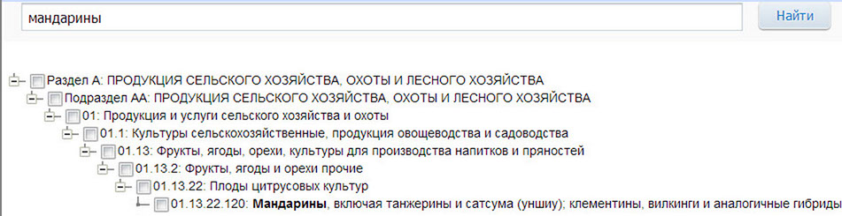

Размещение всех госзаказов происходит в Единой Информационной Системе - ЕИС (не путать с "еаист")
zakupki.gov.ru. Устаревшее наименование - ООС (общероссийский официальный сайт).
Никаких регистраций на этом сайте поставщики не проходят, "личный кабинет" - только для заказчиков.
Можно сразу найти заказ если ввести его реестровый номер в строку поиска.
В остальных случаях следует перейти в "расширенный поиск".
Нужно выбрать (оставить галочку) только на одном из законов;
Можно указать несколько регионов поставки, необходимо помнить, что номинально заказчик может находиться в регионе,
отличном от места поставки в филиалы, особенно это распространено в 223-фз.
По умолчанию "этап размещения" будет выставлен на "Подача заявок" и "Работа комиссии"
(неадекватное свойство ЕИС, - участвовать в тендере на этапе "Работа комиссии" уже невозможно, стоит снять
эту отметку);
Далее необходимо определить коды классификатора (номенклатуру) по которым могут проходить ваши заказы.
Размещение в разных законах совершается (совершалось) с использование разной кодировки (ОКДП, ОКПД, ОКВЭД),
в целом - симметричных друг другу систем, но и имеющим отличия.
Коды, стоящие в Уставе и Выписке юр.лица никакого запретительного или разрешительного
значения для ведения предпринимательской деятельности (в том числе госзакупок) не имеют.
Внизу страницы напротив строки "Коды ..."кнопка "ДОБАВИТЬ".
Коды имеют вложенную (иерархическую) структуру, то есть более крупные (обобщённые) группировки включают более
мелкие (уточнённые).
Если нажимать "+", то можно разворачивать разделы до нужной подгруппы.
Но лучше последовательно вводить ключевые слова из наименования искомого товара\услуги в строке поиска
- ЕИС автоматически будет предлагать подходящие варианты, а по кнопке "НАЙТИ" покажет всю структуру предложений.

Нужно понимать, что у представителей заказчиков нет никаких уникальных знаний и инструментов. Выполняя размещение
они определяют кодировку ровно такими такими же приёмами (в лучшем случае), а значит могут ошибаться и делать широкие
"допущения". Возможно и намеренное дезинформирование.
Заказы могут как включать несколько кодов одновременно (одежда и обувь), так и проходить только в “смежных”
категориям (одежда и обувь без включения кодов обуви).
Одни и те же виды поставок могут вполне законно подпадать под разные коды.
Поисковый запрос может содержать несколько кодировок.
Иногда стоит искать в более крупных (верхних) категориях с бОльшим количеством результатов поиска, после выбора
нужно всегда отмечать поле "с учётом вложенных".
Если запрос сформулирован неточно (результатов поиска слишком много или нет вообще) - можно вернуться назад
через "изменить условия поиска".
Если полученная устраивает (является релевантной)- нужно сохранить адрес этой страницы (в виде закладки браузера).
Это поисковая ссылка, в дальнейшем переходя по ней браузер будет выполнять поиск в
ЕИС по однажды заданным параметрам, в том числе убирая "старые" заказы и добавляя новые (если отмечен этап
"Подача заявок").
Таких ссылок можно и нужно сформировать несколько штук с использованием различных параметров и их комбинаций,
в том числе для поиска в 44-фз и в 223-фз отдельно. Открывать их имеет смысл не реже одного раза в неделю. Можно
добавить как источник в RSS.
ЕИС отличается крайней нестабильностью, особенно по понедельникам. Ночью и на выходные регулярно закрывается на профилактические работы. В связи с этим рекомендуется сохранять всю интересующую документацию. В случае аукциона, если ЕИС недоступна, иногда документы можно получить с площадки.
Полезно изучение истории профильных заказчиков или поставщиков при помощи включения их ИНН в поисковую форму.
Не забывайте выставлять этап размещения заказа на завершено\отменено, а также то, что до 2014 года размещение
происходило по 94-фз и кодам ОКВЭД.
Определить заказчика можно встроенной формой ЕИС или поиском в
реестре заказчиков на площадке, там же есть
реестр участников. Сохраняйте ИНН интересующих вас
организаций.
Обращайте внимание на коды, количество участников, снижения цен, отстранения и жалобы по вашим категориям
товаров.